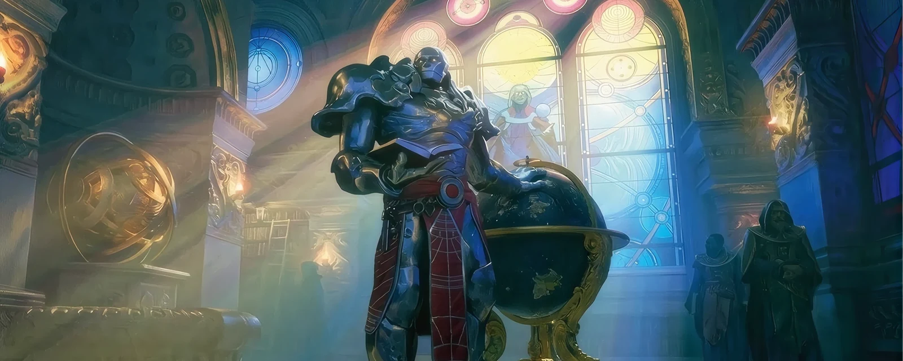
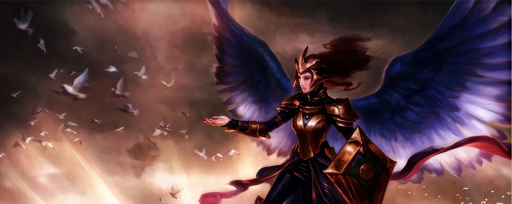

Standard
Cos'è lo Standard?
In questo formato di Magic, le carte legali sono unicamente quelle uscite nelle espansioni principali (set base ed espansioni di espansione) degli ultimi 3 anni. Le carte ruotano periodicamente per mantenere l'ambiente di gioco dinamico e sempre in evoluzione. Se una versione di una certa carta è stata stampata in un set legale in Standard, qualsiasi altra stampa della medesima carta (anche di edizioni passate) è giocabile nel formato.
 60
60
 2
2
 20 min
20 min
Costruzione del Mazzo
Oltre alla regola fondamentale della rotazione e dei set legali, la costruzione di un mazzo Standard segue le linee guida classiche dei formati Constructed. Il tuo mazzo principale deve contenere un minimo di 60 carte. Puoi includere una sideboard (panchina) di massimo 15 carte, utile per adattare la tua strategia tra una partita e l'altra (il meglio delle tre). Fatta eccezione per le terre base, non puoi avere più di quattro copie di una singola carta tra mazzo principale e sideboard. Attenzione però: anche lo Standard ha la sua lista di carte bandite (banlist) per mantenere l'ambiente di gioco sano ed equilibrato!

Perché Scegliere lo Standard?
Lo Standard è amato dalla community per tre motivi principali:
- Metagame in Continua Evoluzione: Grazie alle nuove uscite e alla rotazione periodica dei set, il formato cambia continuamente, offrendo sempre nuove sfide e archetipi da scoprire.
- Accessibilità e Supporto Ufficiale: È il formato competitivo di riferimento per i tornei ufficiali Play Magic e su Magic: The Gathering Arena, rendendo facilissimo trovare avversari e tornei.
- Bilanciamento Strategico: L'assenza delle carte più storiche e sbilanciate della storia di Magic permette un ambiente di gioco focalizzato sul valore, sulle sinergie tra le ultime espansioni e sulle decisioni tattiche.

Archetipi Storici
Il metagame dello Standard varia enormemente a seconda dei set legali al momento, ma permette da sempre di giocare qualsiasi tipo di strategia: Aggro, Midrange, Control o Combo. Ecco alcuni dei concetti di mazzo più famosi:
Mono Red Aggro: L'obiettivo è azzerare i 20 punti vita dell'avversario nel minor tempo possibile usando creature rapide con Rapidità e magie di danno diretto (burn).

Midrange (es. Golgari / Esper): Mazzi che combinano la miglior rimozione di minacce, creature solide a medio costo e carte in grado di generare costante vantaggio risorse per dominare le fasi centrali della partita.

Control (es. Azorius Control): Mazzi focalizzati sul neutralizzare le minacce avversarie con contromagie e rimozioni di massa, per poi chiudere la partita in totale sicurezza grazie a potenti carte di fine partita o Planeswalker.

Pronto a scendere in campo?
Lo Standard dimostra come il continuo rinnovamento delle espansioni regali sfide sempre fresche e ricche di strategia profonda. Che tu sia un veterano in cerca della nuova combinazione vincente o un nuovo giocatore pronto a muovere i primi passi nel panorama competitivo ufficiale, questo formato saprà conquistarti. Raduna i tuoi set recenti, studia il metagame e unisciti a una delle community più attive del Multiverso!